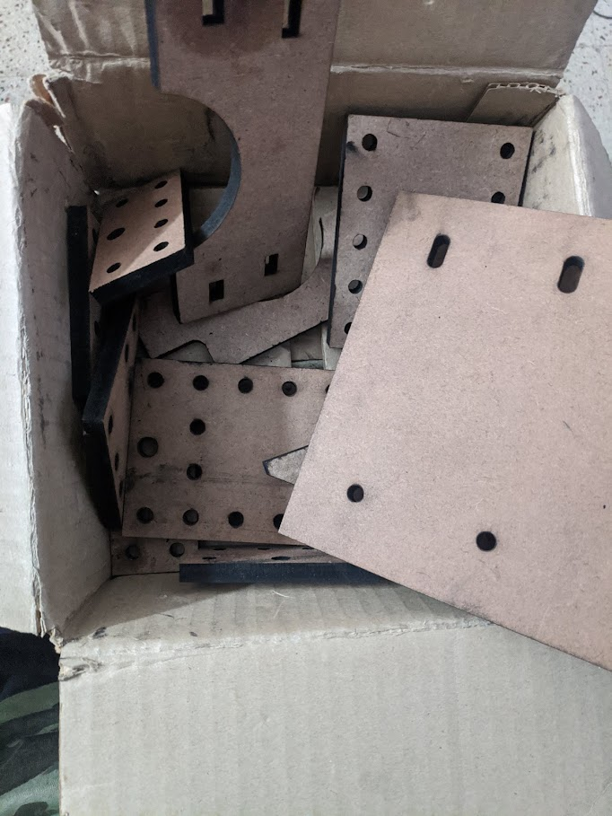
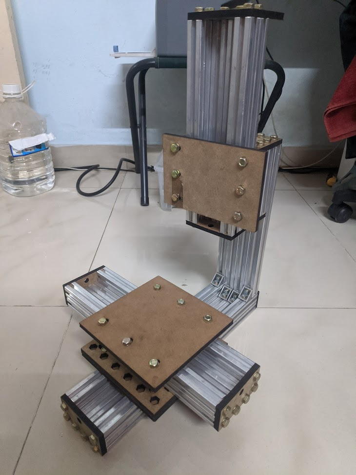
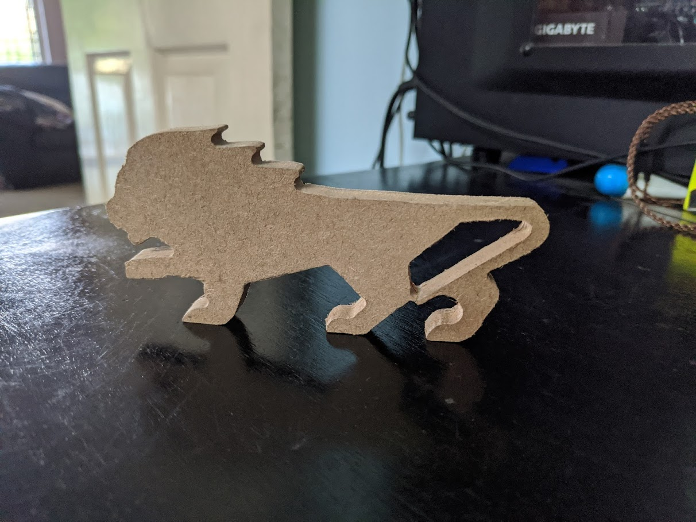
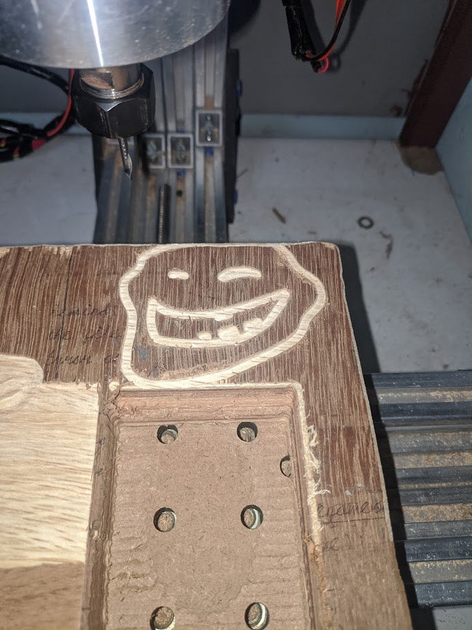
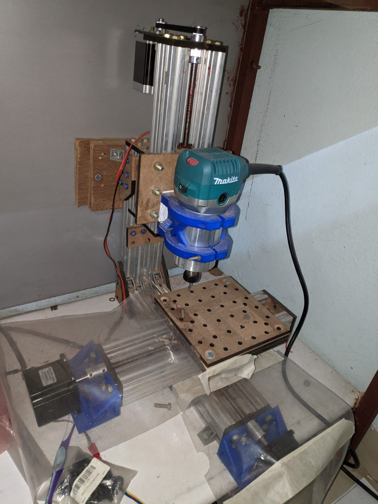
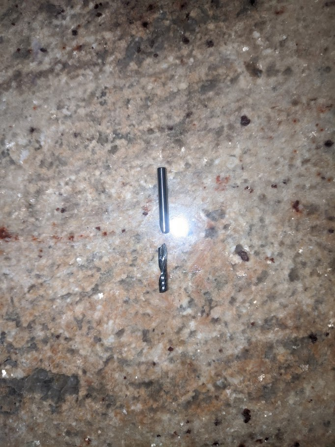

Mini 3 axis CNC mill
Like all my other projects I try to minimize the cost this following plotter costed ~16000 rupees of which spindle was nearly 9000 rupees, NEMA 23 motors costed around 3500 rupees in total. As you can see and probably tell this machine looks very similar to OpenBuilds Mini mill. I had 8 meters of aluminum extrusion lying around that I had bought for something else but couldn't use these extrusion for that project and also participated in tworks hackathon during the same time. I decided to build a cnc mill and then laser-cut the required parts for carriage, bed, etc.
I can call this design a bit rushed as the rigidity of this machine is very bad and worse than i expected. My initial plan was to be able to cut aluminum on this. Woods and plastics is what this cuts the best.
Here's the video of laser cutting of the parts
I went to visit the Tworks facility, they let us inside despite COVID restrictions.
Assembly
Like with all my other projects, I try to minimise the cost. This following plotter cost 16000 rupees, of which the spindle was nearly 9000 rupees, and the NEMA 23 motors cost around 3500 rupees in total. As you can see and probably tell, this machine looks very similar to the OpenBuilds Mini mill. I had 8 metres of aluminium extrusion lying around that I had bought for something else but couldn't use these extrusions for that project and also participated in the Tworks hackathon during the same time. I decided to build a CNC mill and then laser-cut the required parts for the carriage, bed, etc.
I can call this design a bit rushed as the rigidity of this machine is very bad and worse than I expected. My initial plan was to be able to cut aluminium on this. Woods and plastics are what this cuts the best.


Design problems
Just like that pen plotter V2, the only problem with this build is probably the linear bearing, as I have standard ball bearings rolling on an aluminium extrusion. This causes the X-axis to flex when using the mill under load. The dimensional accuracy of milled parts is around +/-0.5mm. Although I haven't used this CNC to make lots of parts for this mill.
In the future, I plan to add an enclosure so that the sound will be reduced. The frame materials can also be made using mild steel as I have access to a stick welding machine now. This can be coupled with better linear motion bearings.




Things learnt
Over the design and build process, I learnt that although it is easy to build machines, finding their use is a task. I don't find lots of reasons to use this as I already have a 3D printer which is a lot easier to use and operate. The setup time for 3D printers is much faster. I hope I'll find more uses for him in the future.